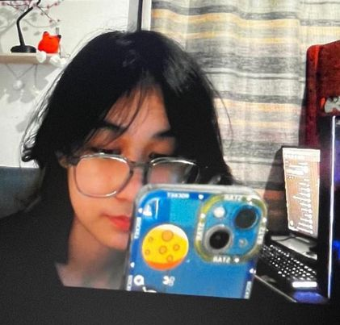

Casey Yncierto

Age: 19
Studying from: FEU Alabang
Course: BSITWMA
About Casey
Casey is a dynamic individual who seamlessly blends their passion for gaming with their coding expertise. As a dedicated gamer, they excel in virtual worlds, while their mastery of multiple programming languages fuels ambitious projects like developing a game website from scratch. With a creative flair and collaborative spirit, Casey thrives on challenges, pushing the boundaries of what's possible in game development and web design. Their enthusiasm and talent inspire both the gaming and coding communities, making Casey a dynamic force in the ever-evolving landscape of technology and entertainment.
Infographic Highlights
10+
Completed Coding Projects
5+
Number of Coding Languages Known
Skills
- Gaming Expertise: Casey is a dedicated gamer who excels in virtual worlds, demonstrating proficiency in gameplay mechanics, strategy, and immersive storytelling. Their passion for gaming drives their creativity and fuels their desire to explore new gaming experiences.
- Coding Mastery: Casey has mastered multiple programming languages, leveraging their technical skills to develop innovative projects such as a game website from scratch. Their expertise spans languages like Python, C++, and more, enabling them to tackle complex coding challenges with confidence.
- Creative Problem-Solving: With a creative flair and collaborative spirit, Casey thrives on challenges, pushing the boundaries of game development and web design. They approach problems with innovation and originality, finding creative solutions that elevate their projects to new heights.
Favorite Quote
"Casey lives by Steve Jobs' words: 'Do what you love, love what you do.'"
Contact
Email: casey.yncerito@example.com
Phone: (555) 123-4567